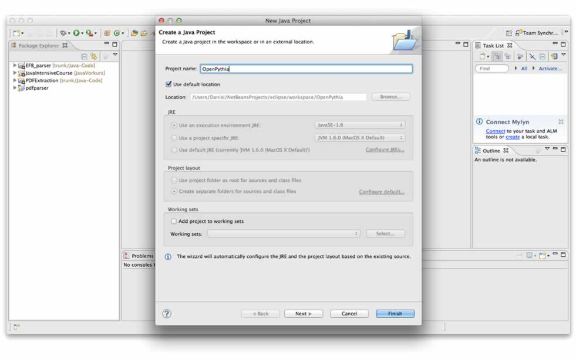
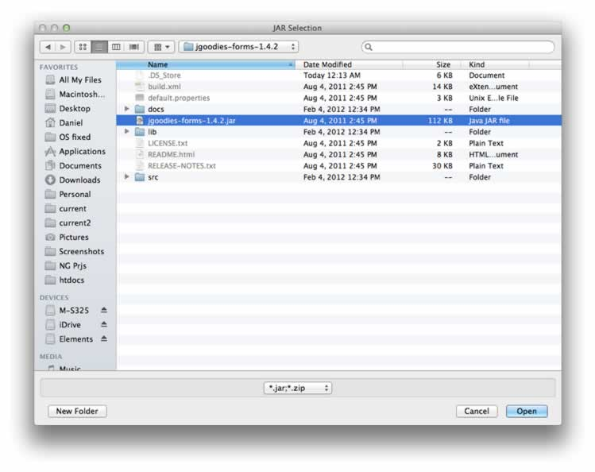

Unleash Top Performance Of Your Oracle Database
OpenPythia helps you to find bottlenecks in your database. Have your tables and table access analyzed to find out how to improve performance at no cost. It is powerful and OpenSource.The meaning of Oracle performance
Databases are todays backbones of our information age. These face two main threats: a lack of performance and increasingly complex operations. As the volume of our information grows our databases are getting ever slower. The second is our thirst for knowledge. As our information grows it becomes more and more complex to gain knowledge out of it. Not only do we accumulate more information, but we also seek to answer more complex questions. OpenPythia helps you to turn the tables again. It is free for anyone – free to use and free to contribute to. Use it at no risk: OpenPythia does not interfere with any data. If you need external advice you can export your test results: no business data will be submitted. The entire report consists of a single Excel sheet – easy to read; easy to change.Optimizing for the better
Many information systems are getting slower and slower over time. Way too often this is encountered by upgrading hardware or upscaling existing virtual machines. Yet most of the time the true problem is SQL statements are working, but poorly constructed. Submitted to your database it takes a quiet longer time than necessary. The vast majority of Oracle databases have potential to improve performance at no more cost. OpenPythia helps you to unleash this hidden performance. So you save money on new hardware and superior licenses for VMs or databases as well. If you want to know your potential performance improvements take OpenPythia out for a testdrive and have your result in a few minutes. Your effort is very little. Anyway think of letting some time pass between your two snapshots.Get OpenPythia up and running
To get started with OpenPythia is easy: just download our latest code from GitHub and execute the JAR file. All you need is this JAR and an adequate JDBC driver. If you like to have the code to check on our application and contribute some code please continue reading the next section. Either case: we were happy to receive some feedback.Get OpenPythia's source code started
Getting started with OpenPythia is easy. In three simple steps you are about to discover bottlenecks in your Oracle database. First we make our OS and/or IDE ready for Git, then we get our code, and last but not least we connect to our Oracle dataase.Which IDE do you use?
#1 Install the code
In Eclipse
Get Git on your OS
Unfortunately Eclipse cannot checkout projects in Git for now. Therefore you have to handle Git versions in your OS and make Eclipse run like a locally handled project. But: you can push and pull existing projects in Eclipse nevertheless – just put this project under version control if you like to.Just get your favorite Git daemon and then choosen a GUI software as well. Here are some suggestions:
Backend:
All OS: Git-SCM: http://git-scm.com/
Mac: GitHub for Mac: http://mac.github.com/
Windows: TortoiseGit: http://code.google.com/p/tortoisegit/

When checking out code make sure to use this repository:
http://github.com/AndreasRothmann/OpenPythia.git
Get the code in there
Start Eclipseand
create a new Java project. Name it OpenPythia and hit
finish.

Then drag the files from your locally pulled clone to your Eclipse project. Say you'd like to copy them and proceed.In NetBeans
Get ready for git
If you decided for the latest NetBeans you're ready for git out of the box. If you're with an older version please install git: clickTools, Pluginsand find
Git and hit install. If you had to install the plugin you have to restart your IDE to make changes take effect.
Get the code
Now you're taken back to your IDE's default site. To download the code go to the main menu and selectTools, Git, Clone. Then insert the project location: https://git@github.com/AndreasRothmann/OpenPythia.git, take git as user name, and
leave other fields blank.If you have a github account feel free to use it. Otherwise the general open account for guests is named git. After that proceed to next.

Clone nameis the project's name and
remote namedefines your personal naming for the selected repository branch: keep this in mind if you differ this one. If you're done hit finish.
Now you're code is down on your machine. To make it work
create a projectand choose to make a
Java projecton the left and select
Java project with existing sourceson the right hand site. Go to next step provide any project name and location. Make sure to use
libraries folderas ./lib. All other values shall be best by default. Proceed to next step.
Now select your files parent location. Go to next step. If the directory was correct your list starts with some ressources
*.png, an .xls, and an .html file. The other
*.java and *.jdf filesshall be all in org/openpythia/. Now we're about to configure our code.
Go to the project, right click the header OpenPythia and select Properties. Go to Run view and go to Main Class, Browse – you're shown exactly one class: take this one named
PythiaMain. Select this and say OK to the properties dialog. Now you got the code and a project ready to go. Let's get some missing libraries.
#2 Get the external libraries
In Eclipse
Load the libraries down
Now we need some downloads. Navigate with your browser tohttp://www.jgoodies.com/downloads/libraries.html
and download the file JGoodies Common and JGoodies Forms. These libraries build the GUI.Now we need some Excel-speaking and -reading JARs as well. Go to
http://poi.apache.org/download.html#POI-3.7
and download both the files poi-bin-*.zip or poi-bin-*.tar.gz. If you're indifferent take the .zip one.Now extract all three downloaded files. Mind the location for import into our project.
Assign them to your IDE
Back in our Eclipseright click on the project, select build path, and click add external ressources. In the next step choose all the extracted folders and provide all the JARs in each root directory.

In NetBeans
Get the libraries down
Now we need some downloads. Navigate with your browser tohttp://www.jgoodies.com/downloads/libraries.html
and download the file JGoodies Common and JGoodies Forms. These libraries take care for the GUI building.Now we need some Office-compatible JARs as well. Go to
http://poi.apache.org/download.html#POI-3.7
and download both the files poi-bin-*.zip or poi-bin-*.tar.gz. If you're indifferent take the .zip one.Now extract all three downloaded files. Mind the location for import into our project.
Assign them to your IDE
Back in our NetBeans go to the project'slibrarysection down there,
right click it, and select Add JAR / Folder. Now from the extracted content select
each JAR in each root directory. Do this for all three libraries. You should see all three JARs in the project's libraries after this step.

#3 Run + connect
In Eclipse + NetBeans
Got a JDBC driver?
Now we're done and we can run our project for the first time. Now run the project. Right click the main project; in Eclipse choose Run as, Java Application; in NetBeans choose Run. The main window appears. When starting OpenPythia for the first time it will most likely ask for your JDBC driver – unless you have the right driver in your classpath.If you got none let's go 'n get it from the Oracle site:
http://www.oracle.com/technetwork/database/enterprise-edition/jdbc-112010-090769.html
Make sure toaccept the license agreementand
login to your account or create a new one. Download the fitting JDBC driver for your database. If in doubt take the latest one: nowadays we took jdbc6_g.jar.

Connect to your Oracle database
Now provide OpenPythia with your JDBC driver byclicking Load JDBC driver.
If you provided it and proceeded OpenPythia will have taken you to the login view. Here you can
enter your login detailsstep by step
and
create an access script for OpenPythiato read details from your database. Save this where ever you like to to send it to your admins or run it on your Oracle system.
The file is a default SQL file – if you open it you can check all statements submitted to your Oracle database.